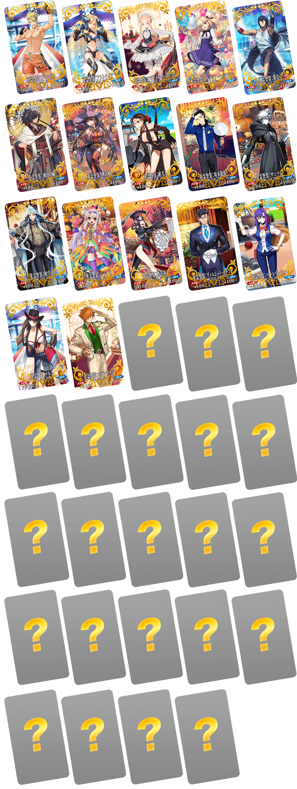

為了記念「Fate/Grand Order」的4周年，預定舉辦宣傳活動「Fate/Grand Order Fes. 2019 ～4th Anniversary～」！
從「Fate/Grand Order Fes. 2019 ～4th Anniversary～」之中，先行公開一部份情報。
◆宣傳活動預定舉辦◆
2019年8月上旬
◆有關從者真名的注意◆
在2018年12月31日(二) 23:00以後新配信的主線故事及期間限定活動、一部份關卡、宣傳活動及召喚中，會顯示隱藏真名的對象從者真名。
※已經配信的主線故事、復刻活動、一部份關卡中不在此限。
※本頁面皆為開發中圖片。會有與實際圖片相異的情況。

為了記念4周年，預定舉辦收集殘留特異點F及從亞種特異點Ⅰ到亞種特異點Ⅳ、從第2部 第1章到第2部 第4章印象的戰鬥「4周年記念回憶關卡」！
通過在迦勒底之門內出現「回憶關卡」的話，可入手期間限定概念禮裝「英靈祭裝」！
期間限定概念禮裝「英靈祭装」的所有插圖都是新繪製！
使用通過「回憶關卡」後入手的「FGO Fes. 2019 英靈祭裝券」，可從全39張之中選擇最多2張喜愛的入手。
從那之中，介紹一部份期間限定概念禮裝「英靈祭裝」！
「回憶關卡」就算通過後也不會消失，能無數次挑戰，可以變更從者和概念禮裝的組合後再次挑戰。

關於今後預定的宣傳活動等將日後公開。